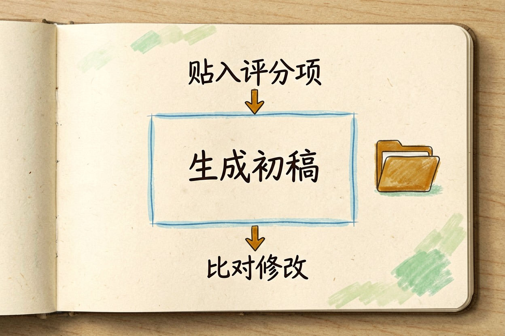
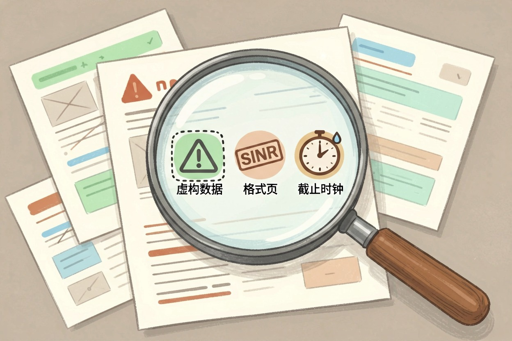

用 AI 写标书？投标文件的提效实际做法 — Learntide
写标书耗在重复排版和套话上最冤。用 AI 拆结构、填要点，能把精力留给真正要你拍板的部分。
用 AI 写标书前先拆清楚结构
用 AI 写标书，最怕一上来就让它"帮我写一份标书"。这种问法太笼统，它只会吐出一堆空话。先把投标文件拆成几块，再分别处理。
商务标、技术标、报价表，是三块核心内容。它们要求不一样，不能混在一起让 AI 一次生成。
你先列好招标方给的评分项。每一项对应什么材料，标在哪里，心里要有数。
读招标公告要慢一点。资质门槛、业绩要求、交货时间，这些硬条件先抄下来。AI 帮不上这类核对，得你自己看。很多新手败在没读透招标文件。评分细则藏在附件里，AI 看不到，得你先翻出来。先把评分项做成清单，逐个打勾，比让 AI 凭感觉写稳得多。
哪些部分适合让 AI 搭骨架
技术方案最合适。它擅长把"我们要做哪些事"铺成条理清楚的章节。你给它项目背景和交付清单，它能出第一版。
实施计划也能交给它。比如排期、里程碑、人员分工，这些格式固定，AI 填起来很快。
服务方案同样合适。你讲清服务内容和标准，它帮你写成段落。读起来比自己憋要顺。培训方案也能交由它写。列清课程和课时，它帮你排成段落，读着不空。预算说明也能让它起草。你给总额和分项，它排成表格式文字。
但报价部分要你自己算。AI 不知道你的成本和利润底线。它给的数字只能当参考，不能直接填进表。
用提示词写标书的具体写法

把评分项贴进去，让 AI 对着写。下面这段可以照改。
你是投标文案助手。
这是招标文件的评分项：
1. 项目理解（20 分）
2. 技术方案（40 分）
3. 实施保障（25 分）
4. 售后服务（15 分）
请针对每一项写一段应答要点，用"我方承诺"开头，语言实在，不要空话。贴得越准，它写得越贴题。评分项漏一项，应答就少一块。
写第一版后，把招标方的原话贴回去比对。看它有没有跑题，有没有夸大。发现就改，再生成一版。提示词写好后，保存成模板。下次投类似标，改数字就能复用，省时间。
用 AI 写标书常犯的错

第一个错是照抄模板。AI 给的通用句，放到你的项目里经常不对口。评委一眼就看出来。
第二个错是数据乱编。它可能在技术方案里写出假的案例数字。这种错最致命，直接废标。
第三个错是忽略格式要求。招标方要的页码、签字处、盖章位，AI 不管这些。你不去核对就会漏。
还有人忘了截止时间。AI 不提醒你交几份、何时交。这类事务性节点，必须由你盯。也有人把竞争对手的名字写进去。AI 不会提醒你泄密，这种错后果很重。
人工把关才能交出去
生成完，先对照评分项一条条勾。少了哪块，补哪块。别指望一次生成就齐活。
资质证明、财务报表这些硬性材料，必须你自己准备。AI 替代不了，也别让它编。
打印装订也别交给它。几份正本、几份副本，封面怎么写，这些要按招标文件来。交之前再查一遍签字栏。漏签、漏章在形式审查就会被刷，前功尽弃。
最后通读一遍语气。标书要显得稳重。别把 ai写标书 当成甩手掌柜，关键内容仍要你拍板。 !尾图人工把关与交付
{kind=link}
本文信息核对于 2026-08-08。AI 产品的价格、免费额度与功能变动频繁，实际以各工具官网当前说明为准。